"Agriculture is not merely a means of food production; it is the cornerstone of human civilization. At the heart of this vital sector lies the soil—a complex, living ecosystem that sustains terrestrial life. Understanding soil health, biodiversity, and sustainable farming practices is essential to overcoming the modern challenges of climate change and ensuring global food security.
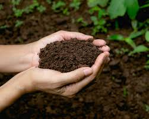
"Soil is a living, dynamic resource that serves as the foundation for life on Earth. It consists of minerals, organic matter,
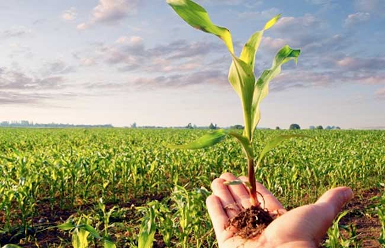
""Crops are the vital link between human survival and the natural world. From grains and vegetables to fruits and fibers,
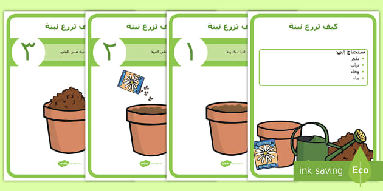
""Agriculture is a structured journey that transforms a tiny seed into a life-sustaining plant. The process of farming begins
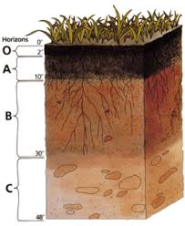
Description: Heavy soil with very small particles. Features: Retains water and nutrients excellently, but drains slowly and becomes very hard when dry.
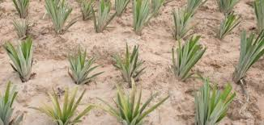
Description: A light soil with large, coarse particles. Features: It drains water very quickly and dries quickly, but it does not retain nutrients well and needs continuous fertilization.
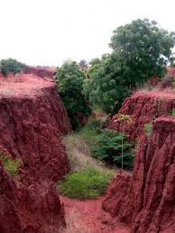
Description: Soft, loose soil composed of medium-sized particles (often found near rivers). Features: Retains moisture very well, is extremely fertile and excellent for agriculture.
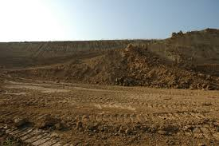
Description: An ideal soil that combines sand, silt, and a little clay. Features: The best type of soil for planting because it balances moisture retention, good drainage, and richness in nutrients.
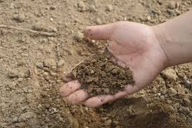
Description: A dark-colored soil that is very rich in decomposed organic matter. Features: It retains large amounts of water, is acidic in nature, and is widely used to improve the quality of other soils.
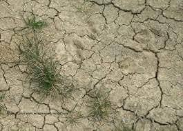
Description: Alkaline soil with a high content of gravel and calcium carbonate. Features: It drains very quickly, but it lacks some nutrients (such as iron) due to its alkaline nature.
"Soil is not just dirt; it is a living ecosystem that requires care and attention. Healthy soil grows strong plants, protects biodiversity, and helps fight climate change by storing carbon. To take care of the soil, we must protect it from erosion, feed it with organic materials, and avoid harmful chemicals. When we look after the earth beneath our feet, we ensure a healthier planet for the future.Healthy soil is the foundation of life on Earth. It provides essential nutrients for plants, filters water, and supports a vast ecosystem of underground microorganisms. Taking care of the soil is crucial for sustainable gardening, farming, and preserving the environment
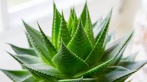
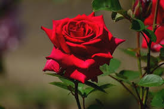
Modern soil care has transitioned into a high-tech science focused on precision and biology. Today, we use AI-powered sensors and 'Soilsmology'—a technique that maps underground soil health using seismic waves—to monitor nutrients and compaction without digging. Instead of synthetic chemicals, the latest trend relies on Microbiome Engineering, injecting tailored living microbes and mycorrhizal fungi to naturally boost fertility and combat climate change by capturing carbon. This intersection of technology and nature ensures that we restore the earth while securing our global food supply
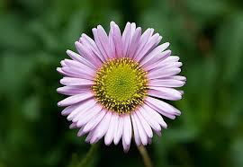
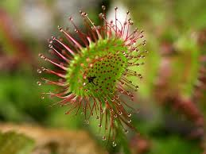
griculture is the oldest and most vital practice in human history, serving as the foundation for civilization and survival. Transforming a tiny seed into a thriving, food-producing plant is both a science and an art that requires patience, precision, and deep care. By understanding the correct step-by-step planting methods—from selecting the right environment to nourishing the soil and managing growth—anyone can successfully cultivate life. Mastering these fundamental steps is not only essential for global food security, but it also empowers individuals to connect with nature and practice sustainability right from their own backyards
1-Choose the Right Location and Plant.Find a spot that gets at least 6 hours of direct sunlight daily
2-Prepare the Soil.Turn the soil 20-30 cm deep to loosen and aerate
3-Plant the Seeds or Seedlings.Leave enough space between plants so roots do not crowd each other
4-Initial Watering. Water immediately after planting using a gentle mist settingWater immediately after planting using a gentle mist setting
5-Ongoing Care and Growth . Remove wild weeds regularly because they steal food and water
6-Transforming a tiny seed into a thriving and managing growth—anyone